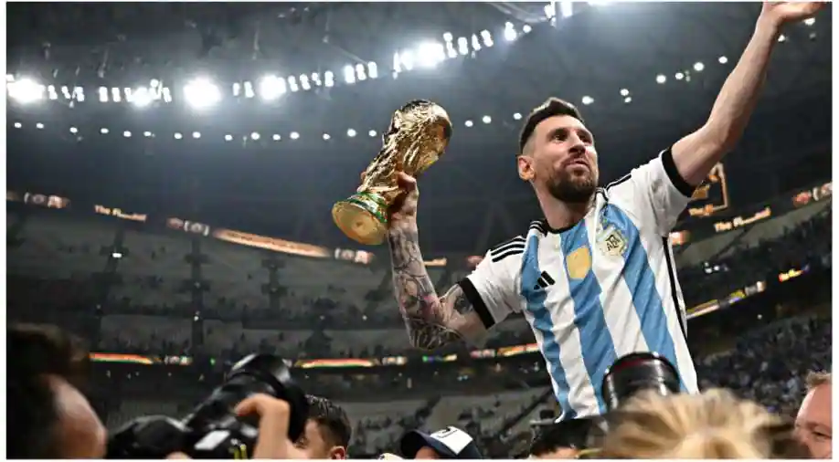
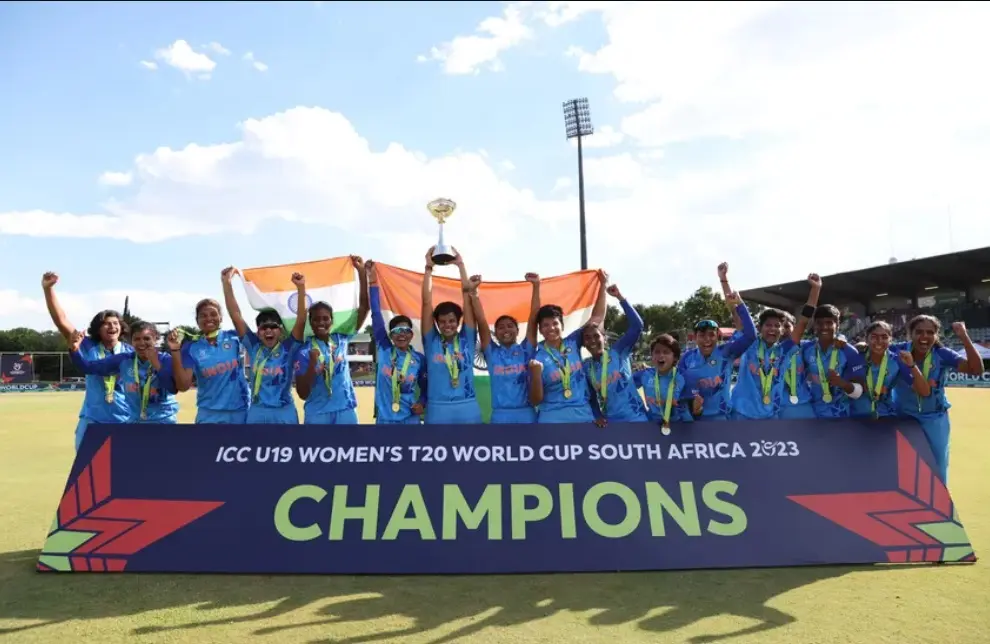

Lionel Messi breaks the internet, shares pictures sleeping with FIFA World Cup trophy
 Argentina ended their 36-year-long drought by winning the FIFA World Cup 2022 edition on Sunday evening (December 18), edging past defending champions France in a riveting finale at the Lusail Stadium in Qatar. Being ahead by 2-0 till the 80th minute, Argentina lost the plot with Frenchman Kylian Mbappe scoring twice and taking the game to the extra time.
The extra time also couldn't separate the two sides with the scoreline being 3-3 before Lionel Messi & Co. kept their calm and emerged on top in the penalty shootout (by a 4-2 margin). With this, Messi's World Cup run ended on an emphatic fashion and the 35-year-old also returned with the Golden Ball Award; being the first to win in twice. After the win, Messi is on cloud nine and kept the World Cup trophy close to him. In a recent Instagram post, the Argentine captain shared pictures of him sleeping with the coveted trophy. Here's the post, which has become viral and garnered in over 4 million likes just minutes after being posted:
ICC Women’s U19 T20 World Cup: India beat England to win the inaugural Women’s U19 T20 World Cup...
ICC U-19 Women’s T20 World Cup India beat England in the first-ever ICC U-19 Women’s T20 World Cup final in Potchefstroom, South Africa. India bowled out England for a paltry 68 and won by 7 wkts. This is the first ICC trophy India has won in women’s cricket. The Indian women’s cricket team has never won a World Cup at any level. The seniors reached the World Cup final on three occasions across formats but failed to go the distance. Bowling first, India cleaned up the English side for mere 68 runs in 17.1 overs.
ICC U-19 Women’s T20 World Cup: Key points England captain and stellar all-rounder Grace Scrivens has been named Player of the Tournament after a run of outstanding performances with bat and ball. Titas Sadhu of India poses after being named Player of the Match following the ICC Women’s U19 T20 World Cup 2023 Final match.
Gamers Rejoice: Esports now officially recognized as a sport in India
 In a big move, The Government of India has officially recognised 'E-Sports' (Electronic Sports)
as a part of Multi-sports events. E-Sports will be taken care of by Department of Sports under
the Ministry of Youth Affairs and Sports. Meanwhile, 'Online Gaming' will be under MEITY
(Ministry of Electronics and Information Technology).Indian Esports Industry has been fighting
for Esports, not be clubbed under the umbrella term "Gaming".
In a big move, The Government of India has officially recognised 'E-Sports' (Electronic Sports)
as a part of Multi-sports events. E-Sports will be taken care of by Department of Sports under
the Ministry of Youth Affairs and Sports. Meanwhile, 'Online Gaming' will be under MEITY
(Ministry of Electronics and Information Technology).Indian Esports Industry has been fighting
for Esports, not be clubbed under the umbrella term "Gaming".
The Industry has maintained that, Esports (Electronic sports) is a competitive sport where esports athletes use their physical and mental abilities to compete in certain genres of video games in a virtual, electronic environment. Reacting to the news, Lokesh Suji, Director, Esports Federation of India & Vice President of the Asian Esports Federation (AESF) says, "Great news for us to begin the New Year. We have been constantly working on establishing the difference between esports and iGaming, and finally our efforts have been fulfilled. Only a short time until we see Esports being placed in the same league as cricket, football, basketball, etc. and having similar fan power, scale and craze."
"With the latest announcement and India recently competing for medals at the inaugural Esports Asian Games, people are shaking off the misconceptions linked with esports as a passion or career option. The year 2023 beholds greater opportunities for esports and we are anticipating more favourable developments, only making it bigger. It surely has been a great year for Indian esports," Suji added.
“We welcome the appointment of MeitY as a nodal ministry for online gaming. A uniform central regulation for online skill gaming has been a long-standing demand of the industry and this step will hopefully lead to a progressive regulatory framework underpinned by consumer welfare. This will help further grow the industry and make online gaming a cornerstone of Digital India, " says Roland Landers, CEO, All India Gaming Federation. "We also welcome the move to have MYAS regulate esports as part of multi sports events.